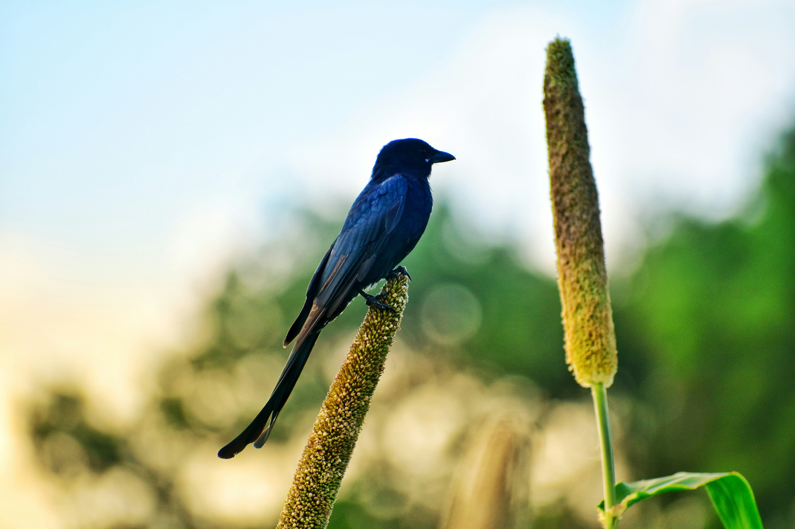

The Ashy Drongo is a slender, medium-sized drongo with grey plumage and a distinctive deeply forked tail. Its plumage varies considerably between different populations, with some forms being much darker than others. It is an active aerial hunter that frequently launches from exposed perches to capture insects in flight. The species occurs in forests, open woodland, plantations, gardens, and hilly regions and often perches prominently while scanning for prey.